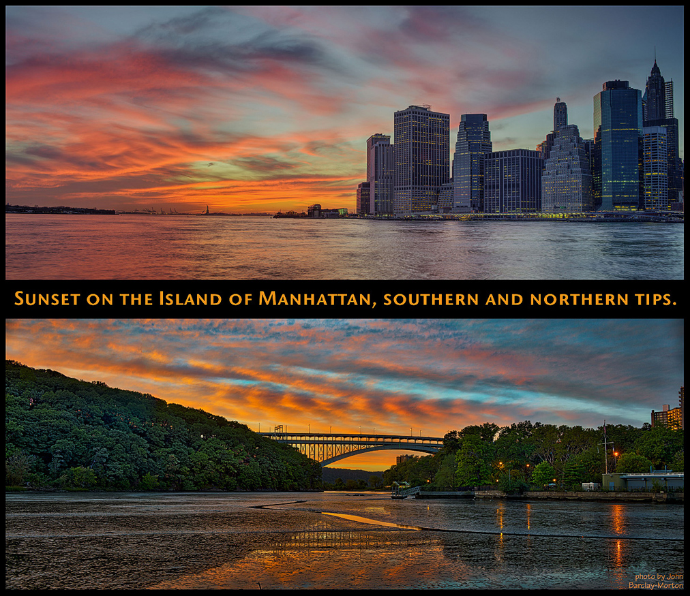

All Things Photography:
- capturing images of all types, big and small;
- event photography, and compiling complete experiential narratives;
- lighting and photographing small objects, such a jewelry;
- editing photographs to any exacting standard.
Graphic Design:
- layout and design for print and digital display;
- from business cards to books; from banners to websites;
- one-stop source for complete design solutions.
Writing; Research and Synthesis:
- mapping experiential parameters from situational analysis;
- aggregating consistencies across data sets;
- producing new conceptual configurations well grounded in reality.
Editing Text:
- meticulous proofreading;
- conceptual analysis of logical consistency;
- assessment of narrative contingencies, for temporal continuity.
